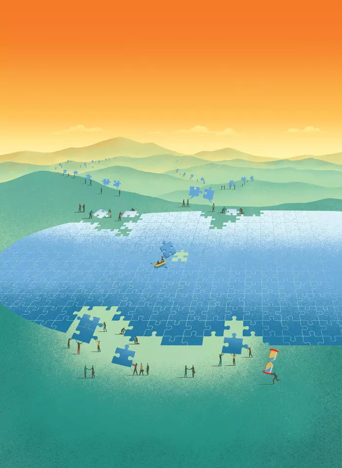
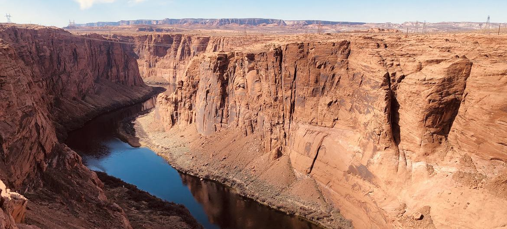
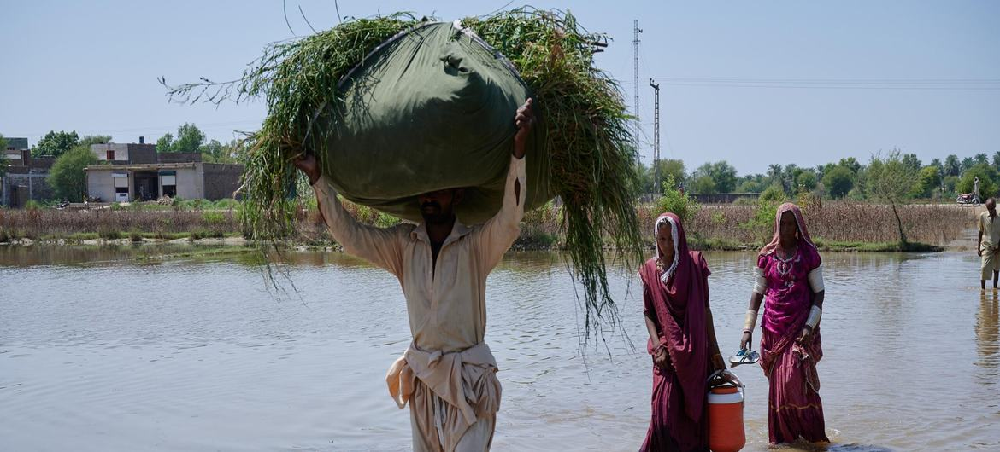
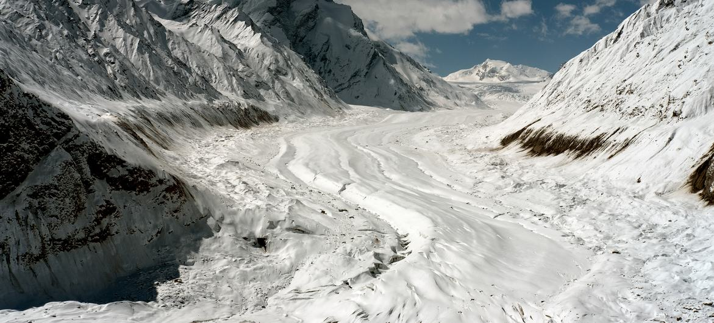

Riesgo inminente de una crisis mundial del agua
Entre dos mil y tres mil millones de personas sufren escasez de agua en el mundo. Esta escasez se agravará en las próximas décadas, especialmente en las ciudades, si no se impulsa la cooperación internacional en este ámbito, advierten la UNESCO y ONU-Agua en la última edición del Informe de las Naciones Unidas sobre el Desarrollo de los Recursos Hídricos en el Mundo.

Entre 2.000 y 3.000 millones de personas sufren escasez de agua durante al menos un mes al año, lo que supone graves riesgos para sus medios de subsistencia, en particular la seguridad alimentaria y el acceso a la electricidad. Se prevé que la población urbana mundial que sufre escasez de agua se duplique, pasando de 930 millones en 2016 a 1.700-2.400 millones de personas en 2050. La creciente incidencia de sequías extremas y prolongadas también está estresando los ecosistemas, con consecuencias nefastas para las especies vegetales y animales.
22 de marzo 2023
Cambio climatico y medioambiente
Sequías, inundaciones, deshielos, nivel del mar, agricultura, alimentación, industria, energía… todo depende del agua. La crisis climática y la destrucción del medio ambiente creados por el ser humano están poniendo en jaque nuestros recursos hídricos y a partir de ahora tendremos desafíos para mantener nuestro actual sistema de vida.

Las sequías destructivas y las fuertes lluvias están causando daños importantes, mientras el derretimiento de la nieve y los glaciares aumentan los riesgos de inundaciones y ponen en peligro el agua que bebemos y los alimentos que comemos.
El ciclo hidrológico se está desequilibrando como resultado del cambio climático y la actividad humana, según un nuevo informe de la Organización Meteorológica Mundial (OMM) que ofrece una evaluación exhaustiva de los recursos hídricos mundiales. El informe Estado de los recursos hídricos mundiales 2022 de la agencia meteorológica de la ONU enfatiza la necesidad de comprender mejor los recursos de agua dulce e insta a un cambio de política fundamental. Se requiere un mejor seguimiento, intercambio de datos, cooperación transfronteriza y mayores inversiones para gestionar las condiciones extremas de forma eficaz.
Respaldado por observaciones de campo, sensores remotos instalados en satélites y modelos numéricos para evaluar los recursos hídricos globales, el informe contiene información detallada sobre factores hidrológicos clave como las aguas subterráneas, la evaporación, el caudal de las aguas, el almacenamiento de agua terrestre, la humedad de los suelos, la criósfera (agua congelada), la afluencia del agua en embalses y los desastres hidrológicos.
12 de Octubre 2023
Ciclo del agua interrumpido

Los glaciares y la capa de hielo están desapareciendo ante nuestros ojos. El aumento de las temperaturas ha acelerado, y también alterado, el ciclo del agua.
Una atmósfera más cálida retiene más humedad, lo que provoca episodios de precipitaciones e inundaciones mucho más intensas. Y en el extremo opuesto, más evaporación, suelos secos y sequías más intensas, explicó el director de la agencia de la ONU.
Actualmente 3600 millones de personas carecen de acceso a suficiente agua al menos un mes al año y se espera que esta cifra aumente a más de 5000 millones en 2050.
12 de Octubre 2023
Sobre hielo delgado

"Este informe ofrece una visión general amplia y coherente de los recursos hídricos en todo el mundo, destacando la influencia de los cambios climáticos, ambientales y sociales", dijo Petteri Taalas, secretario general de la Organización Meteorológica Mundial.
El derretimiento de los glaciares, como los de los Alpes suizos, que han perdido una décima parte de su masa tan sólo en los dos últimos años, están contribuyendo a los riesgos de inundaciones y amenazando la seguridad hídrica a largo plazo de millones de personas, afirmó Taalas.
“Desafortunadamente, hemos perdido este juego del derretimiento de los glaciares. Este suceso y el aumento del nivel del mar pueden continuar durante los próximos miles de años debido a las altas concentraciones de dióxido de carbono. En general, tendremos desafíos para conseguir agua para la agricultura, para los seres humanos, la industria y también para la producción de energía hidroeléctrica”.
12 de Octubre 2023